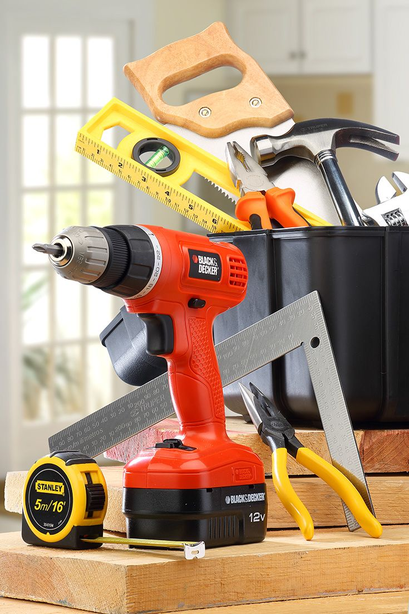
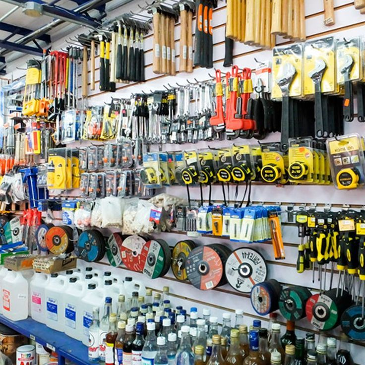

Herramientas
Descubre las herramientas de ferretería indispensables para tus proyectos en casa. Aprende sobre su uso, tipos y consejos útiles.

Ferreteria
En una ferretería es posible encontrar una amplia variedad de herramientas indispensables, tales como destornilladores, martillos, alicates, llaves y pinzas. Estas son herramientas básicas.

Instrumentos
Las herramientas de ferretería son instrumentos o utensilios que se utilizan para realizar trabajos de reparación, construcción, bricolaje o mantenimiento en el hogar, el jardín.